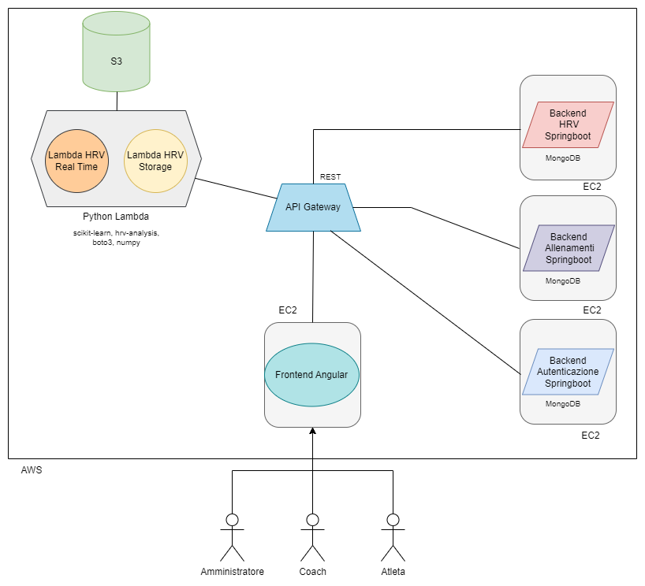
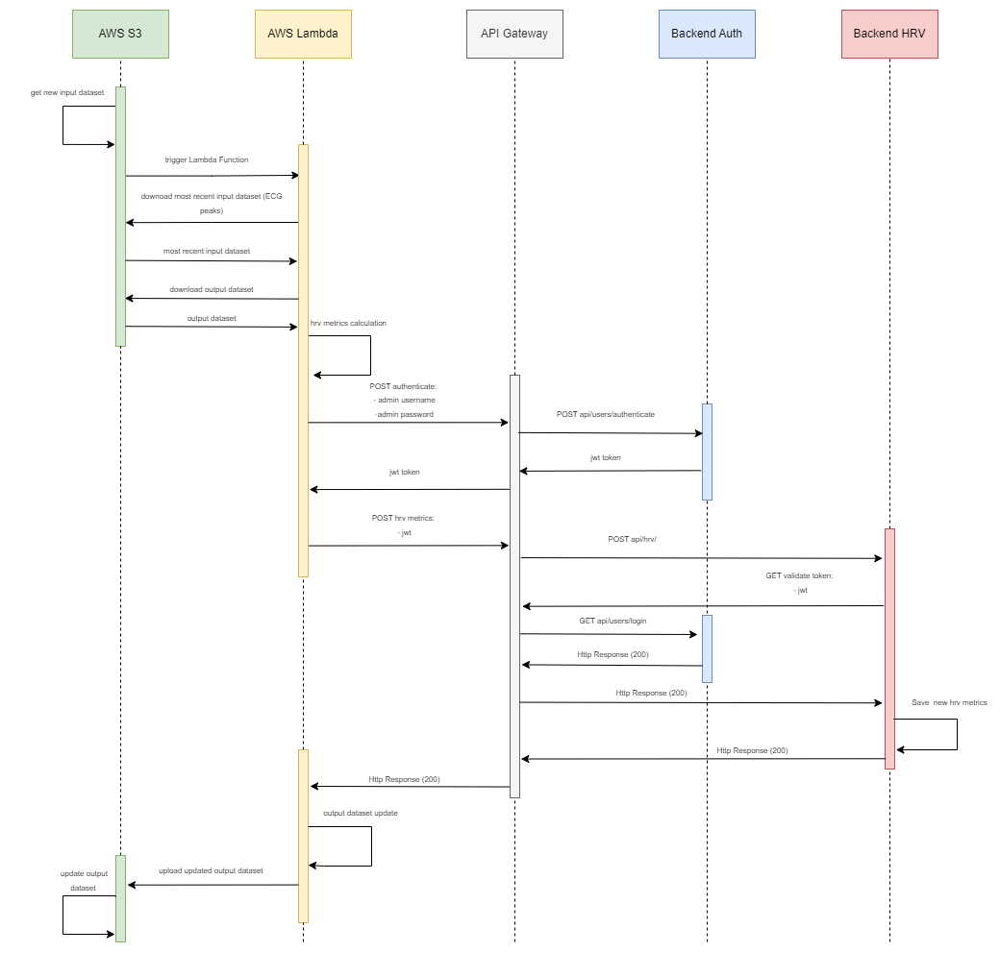

Membri del team
| Matricola |
Cognome |
Nome |
E-mail |
GitHub |
| 20087391 |
Semeraro |
Gianluigi |
gianluigi.semeraro@studenti.unisalento.it |
gianluseme |
| 20080996 |
Colella |
Simone |
simone.colella@studenti.unisalento.it |
SimoColella |
Presentazione del progetto
Il progetto IoT Digital Twin si propone di sviluppare un sistema innovativo di Digital Twin per l’ambito sportivo, con particolare attenzione allo sport del calcio.
L’obiettivo principale è fornire uno strumento completo e altamente fruibile che consenta il monitoraggio approfondito degli atleti attraverso l’acquisizione di dati provenienti da smartwatch e dispositivi Polar.
All'interno del sistema, un allenatore è in grado di monitorare gli allenamenti (e i relativi risultati) dei calciatori che segue, con la possibilità di assegnargliene di nuovi con il supporto del digital twin.
L'implementazione principale è stata suddivisa in due parti distinte:
- Design dell’architettura Cloud AWS in cui distribuire il codice implementato. Contestualmente, sono state individuate e studiate le tecnologie AWS integrate nell’architettura.
- Design della web application e realizzazione di un semplice script contenente, tra le varie features discusse nel proseguimento della trattazione, un semplice algoritmo di Machine Learning per la predizione dell’intensità di allenamento da suggerire al coach.
Funzionalità
Funzionalità complete del progetto
Di seguito sono elencati i requisiti funzionali del progetto
| Funzionalità |
Descrizione |
| Acquisizione dati |
Il sistema deve essere in grado di acquisire e integrare i dati provenienti dai dispositivi indossabili;
per semplicità, i dati utilizzati nella web application sono stati forniti da alcuni Dataset che riportano, a loro volta, i dati effettivamente prelevati dai dispositivi fisici. |
| Rappresentazione digitale degli atleti |
Creare una rappresentazione digitale accurata di ciascun atleta, comprendente dati fisiologici, metriche di attività fisica, capacità specifiche e prestazioni sportive. |
| Personalizzazione degli allenamenti |
Utilizzare i suggerimenti del Digital Twin per creare piani di allenamento personalizzati e adattati alle esigenze specifiche di ciascun atleta, al fine di massimizzare le prestazioni. |
| Dashboard scalabile |
Progettare una dashboard intuitiva ed estremamente scalabile, in grado di fornire una panoramica chiara e accessibile delle prestazioni degli atleti, adattabile alle diverse esigenze degli utenti, quali Amministratore, Coach e Atleti. |
| Supporto alle decisioni |
Offrire strumenti di supporto alle decisioni, basati su dati oggettivi e predittivi, per facilitare il processo decisionale e la definizione di obiettivi per il raggiungimento delle migliori prestazioni possibili. |
Architettura del sistema
Il sistema è interamente distribuito sulla piattaforma Cloud Amazon Web Service, l'architettura è raffigurata dal seguente diagramma:

Il sistema è composto dai seguenti componenti principali:
- Front-End: Webapp sviluppata in Angular per consentire agli utenti d'interagire in maniera semplice e intuitiva con il sistema. È distribuita su un'istanza EC2
-
Back-End Autenticazione: È composto (come gli altri servizi back-end del sistema) da un web server sviluppato con Java Springboot che espone API REST per la gestione degli utenti, e da un database MongoDB per la loro corretta memorizzazione. Entrambi sono virtualizzati con Docker.
Qui è inoltre implementato Spring Security per la generazione e validazione di token JWT per garantire l'autenticazione degli utenti e la corretta autorizzazione di tutte le richieste del sistema.
Infatti, gli altri servizi back-end, che verranno di seguito elencati, quando ricevono una richiesta, ne inoltrano il token jwt a questo servizio per validarlo. È distribuito su un'istanza EC2.
-
Back-End Allenamenti: Si occupa della gestione di allenamenti e assegnazioni, e della loro corretta memorizzazione. È distribuito su un'istanza EC2.
- Back-End HRV: Gestisce i risultati degli allenamenti, composti dalla metrica HRV Median NNI e dall'intensità dell'allenamento. È distribuito su un'istanza EC2.
-
API Gateway: Tutte le API dei servizi Back-End (e non solo) sono esposte attraverso il servizio AWS API Gateway.
-
Bucket S3: Nel bucket S3 di AWS sono depositati i dataset di input (che si suppone che siano generati e inviati dai dispositivi Polar),
un dataset di output che aggrega tutti i risultati, e uno impiegato per il training di un modello di classificazione. Tutti i dataset del bucket vengono utilizzati dalle funzioni Lambda di seguito elencate.
-
Funzione Lambda HRV Storage: È uno script Python Lambda che si avvia in automatico ogni volta che viene caricato un nuovo dataset di input, ovvero i risultati di un allenamento di un determinato atleta. all'interno del bucket S3.
Viene prelevato tale dataset, e avviata una serie di operazioni che culminano con il calcolo le relative metriche HRV, tra cui median NNI. Inoltre, lo script preleva dal bucket S3 un dataset che utilizza per addestrare un modello di classificazione, che permette successivamente
di associare al valore median NNI l'intensità dell'allenamento (Alta o Medio/Bassa). A questo punto, previa autenticazione (e conseguente ottenimento del token jwt), lo script invia il risultato al servizio HRV attraverso una richiesta POST.
-
Funzione Lambda HRV Real Time: Questo script Python Lambda può essere richiamato attraverso un'API REST esposta da API Gateway. Il suo scopo è quello di inviare, previa richiesta, al front-end
i risultati (simulati) in tempo reale di un allenamento in corso. Lo script, infatti, riceve in input l'intensità prevista dell'allenamento (alta o medio/bassa) e, in base ad essa, preleva dal bucket S3 il dataset contenente i risultati
parziali di un allenamento a intensità alta o medio/bassa. In maniera analoga allo script del punto precedente, calcola le metriche hrv, nello specifico median NNI, con l'intensità ad essa associata (anche qui, infatti, è stato addestrato un modello di classificazione).
Front-End
Repository GitHub
Come già accennato, l'apparato di front-end del sistema è una webapp sviluppata in Angular.
Gli attori che interagiscono con la webapp sono: amministratore, coach e atleta. L'amministratore può creare nuovi coach, atleti e allenamenti, con la possibilità di modificarne alcuni attributi.
Per ogni coach (allenatore) di ogni squadra è definito il ruolo dei giocatori che può seguire (attaccante, difensore, centrocampista, portiere).
Ogni allenatore può seguire uno o più giocatori dello stesso ruolo e squadra, ed ogni calciatore può essere seguito soltanto da un coach.
Sulla base dei risultati precedenti, l'allenatore sceglie l'allenamento da assegnare all'atleta, supportato dal digital twin.
Gli allenamenti possono essere specifici per il ruolo del giocatore oppure generici. In ogni caso ad ogni allenamento è associata la relativa intensità (Alta, Medio/Bassa).
Nella fase di assegnamento, inoltre, può essere indicata la durata dell'allenamento, la presenza o meno di circuiti e la relativa durata.
L'atleta può prendere visione dell'allenamento assegnato e svolgerlo. Inoltre, è possibile consultare lo storico degli allenamenti assegnati e dei risultati, anche su grafico, sia per l'atleta che per il coach.
Di seguito sono elencate le funzionalità offerte dalla webapp più nel dettaglo, per ogni ruolo.
Amministratore
- Home: Qui è possibile vedere informazioni relative al numero di atleti, di squadre e di allenamenti memorizzati nel sistema.
- Gestione Atleti: Qui si può visualizzare l'elenco di tutti gli atleti, visualizzarne le informazioni nel dettaglio e modifcarne la squadra. In tal caso, è possibile subito assegnare un coach dello stesso ruolo della nuova squadra, se è disponibile.
Si possono, inoltre, creare nuovi atleti, specificando:
- Nome
- Cognome
- Squadra
- Posizione in campo
- Coach da assegnare (se disponibile, il coach viene selezionato automaticamente una volta definita la squadra)
- Email
- Data di nascita
- Username
- Password
- Altezza in centimetri
- Peso in chilogrammi
- Gestione Coach: Qui si può visualizzare l'elenco di tutti i coach, visualizzarne le informazioni nel dettaglio e modifcarne ruolo allenato e squadra (soltanto se non seguono nessun atleta).
È possibile, inoltre, creare nuovi coach, specificando:
- Nome
- Cognome
- Email
- Data di nascita
- Username
- Password
- Squadra
- Ruolo allenato
- Gestione Allenamenti: Qui si può visualizzare l'elenco di tutti gli allenamenti, visualizzarne le informazioni e modificare il nome.
È possibile creare nuovi allenamenti, definendo:
- Nome
- Tipo (Attaccante, Difensore, Portiere o Generale)
- Intensità (Alta, Media, Bassa)
Coach
- Home: Qui è possibile vedere informazioni relative al numero di atleti seguiti e la squadra.
Inoltre, se sono disponibili nuovi risultati relativi agli allenamenti degli atleti, viene visualizzato un avviso in merito, contenente l'elenco degli atleti con risultati nuovi da valutare.
- Gestione Atleti: Qui si può visualizzare l'elenco degli atleti seguiti, visualizzarne le informazioni nel dettaglio e modifcarne altezza e peso. Da qui, è possibile accedere allo storico degli allenamenti assegnati per ogni atleta.
- Allenamenti: In questa sezione si può visualizzare lo storico dei risultati degli allenamenti svolti dagli atleti seguiti. Se tali risultati non sono già stati valutati per assegnare allenamenti, è possibile assegnare all'atleta interessato un nuovo allenamento, basandosi sulle di essi.
Nello specifico, il digital twin fornisce una lista di allenamenti disponibili per l'assegnamento, effettuando un filtro in base all'intensità, che è comunque possibile ignorare semplicemente rimuovendolo.
Ad esempio, se un atleta ha svolto un allenamento molto intenso, in fase di assegnamento si potrà scegliere tra una lista di allenamenti con intensità medio/bassa per il ruolo allenato.
Per ogni assegnazione dell'allenamento, è possibile definirne la durata in minuti ed eventualmente il numero di circuiti e la loro durata.
SI può, inoltre, visualizzare graficamente i risultati degli allenamenti degli atleti. È possibile scaricare in formato .csv il resoconto di tutti i risultati degli allenamenti di tutti o dei singoli atleti, oltre al file in formato PDF del grafico.
- Gestione Profilo: Qui puoi visualizzare le informazioni relative al tuo profilo, con la possibilità di modificare email e password.
Atleta
- Home: Qui è possibile vedere subito le informazioni relative all'allenamento assegnato nella data corrente, se è presente.
- Allenamenti: Qui si può visualizzare lo storico degli allenamenti assegnati dal coach, con la possibilità di visualizzarli nel dettaglio.
Da qui è possibile accedere alla schermata di visualizzazione dello storico dei risultati degli allenamenti, con la possibilità di vederli su grafico, scaricalo in formato pdf, oppure scaricare il resoconto in formato .csv.
- Gestione Profilo: Qui è possibile visualizzare le informazioni relative al profilo, con la possibilità di modificare email e password.
Back-End Autenticazione
Repository GitHub
È composto da un web server sviluppato con Java Springboot che espone API REST per la gestione degli utenti, e da un database MongoDB per la loro corretta memorizzazione. Entrambi sono virtualizzati con Docker.
Qui è inoltre implementato Spring Security per la generazione e validazione di token JWT per garantire l'autenticazione degli utenti e la corretta autorizzazione di tutte le richieste del sistema.
Infatti, gli altri servizi back-end, quando ricevono una richiesta, ne inoltrano il token jwt a questo servizio per validarlo.
Di seguito sono elencate alcune delle API più significative:
- api/users/authenticate (POST): Richiede nel body un documento in formato JSON contenente username e password dell'utente. Se le credenziali sono corrette, restituisce un documento JSON contenente un token jwt con validità di 10 ore, altrimenti restituisce un errore 403.
- api/users/login (GET): Gli altri servizi richiamano questa API quando devono verificare la validità di un token jwt. Se è valido, restituisce 200 OK e il ruolo dell'utente proprietario del token.
- api/users/atleta/ (POST): Questa API salva nella collezione degli atleti del database MongoDB un nuovo atleta, con gli attributi definiti nel body.
- api/users/coach/ (POST): Questa API salva all'interno della collezione dei coach database MongoDB un nuovo coach, con gli attributi definiti nel body.
Back-End Allenamenti
Repository GitHub
È composto da un web server sviluppato con Java Springboot che espone API REST per la gestione degli allenamenti e delle loro assegnazioni, e da un database MongoDB per la loro corretta memorizzazione. Entrambi sono virtualizzati con Docker.
Di seguito sono elencate alcune delle API più significative:
- api/allenamenti/ (POST): Questa API salva nella collezione degli allenamenti del database MongoDB un nuovo allenamento con gli attributi definiti nel body JSON.
- api/assegnazioni/{idCoach} (POST): Questa API salva nella collezione delle assegnazioni degli allenamenti del database MongoDB una nuova assegnazione di un allenamento, con gli attributi definiti nel body.
Richiede come variabile del path l'ID del coach in quanto richiama a sua volta l'API GET api/users/atleta/findIdCoachByIdAtleta/{idAtleta} per verificare che ad assegnare un nuovo allenamento a un atleta sia effettivamente il coach che lo segue.
Back-End HRV
Repository GitHub
È composto da un web server sviluppato con Java Springboot che espone API REST per la gestione degli indici HRV, e da un database MongoDB per la loro corretta memorizzazione, entrambi virtualizzati con Docker.
Di seguito sono elencate alcune delle API più significative:
- api/hrv/ (POST): Questa API salva nel database MongoDB un nuovo oggetto HRV, con gli attributi definiti nel body. Lo script Lambda Python HRV Storage richiama questa API per salvare il valore median_nni calcolato e l'intensità ad esso associata.
- api/downloadCsv (POST) Richiede nel body una lista di oggetti HRV e restituisce un file in formato .csv contenente il resoconto dei risultati degli allenamenti, scaricabile dalla webapp del front-end.
Script Python Lambda HRV Storage
Repository GitHub
Si tratta di una funzione Lambda di AWS eseguita con Python 3.10, e viene eseguita in automatico ogni volta che viene caricato un nuovo dataset di input nel bucket S3 'iotdigitaltwin'.
Il dataset viene prelevato e memorizzato in una lista, dunque lo script avvia una serie di operazioni che culminano con il calcolo le relative metriche HRV, tra cui median NNI. Inoltre, lo script preleva dal bucket S3 un dataset che utilizza per addestrare un modello di classificazione, che permette successivamente
di associare al valore median NNI l'intensità dell'allenamento (Alta o Medio/Bassa). A questo punto, previa autenticazione (e conseguente ottenimento del token jwt), lo script invia il risultato al servizio HRV attraverso una richiesta POST.
Di seguito è raffigurato il diagramma di sequenza dell'interazione dei componenti del sistema quando viene eseguito lo script.

Lo script, dunque, svolge nell'ordine le seguenti operazioni:
- Inizializza il client AWS S3.
- Recupera il nome del bucket e della directory di interesse.
- Scarica il file CSV più recente dal bucket S3 e legge la prima colonna dei dati (picchi R dell'ECG).
- Scarica il file CSV di output, contenente tutti i risultati degli allenamenti.
- Crea un modello di classificazione SVM con kernel lineare e lo addestra utilizzando dati di training.
- Valuta il modello utilizzando dati di test e stampa le metriche di valutazione.
- Calcola gli intervalli RR e identifica gli outliers.
- Calcola le metriche HRV (Heart Rate Variability) nel dominio del tempo e delle frequenze.
- Classifica l'intensità dell'attività fisica utilizzando il modello SVM.
- Esegue l'autenticazione sul servizio di autenticazione e invia i risultati dell'analisi HRV al servizio HRV.
- Modifica di conseguenza il file CSV di output e lo carica nuovamente nel bucket S3.
- Stampa le metriche HRV calcolate.
Script Python Lambda HRV Real Time
Repository GitHub
Questa Lambda function eseguita con Python 3.10 può essere richiamata attraverso un'API REST esposta da API Gateway. Il suo scopo è quello di inviare, previa richiesta, al front-end
i risultati (simulati) in tempo reale di un allenamento in corso.
Lo script, infatti, riceve in input l'intensità prevista dell'allenamento (alta o medio/bassa) e, in base ad essa, preleva dal bucket S3 il dataset contenente i risultati
parziali di un allenamento a intensità alta o medio/bassa.
Lo script avvia una serie di operazioni che culminano con il calcolo le relative metriche HRV, tra cui median NNI. Inoltre, lo script preleva dal bucket S3 un dataset che utilizza per addestrare un modello di classificazione, che permette successivamente
di associare al valore median NNI l'intensità dell'allenamento (Alta o Medio/Bassa).
Le operazioni svolte dallo script possono riassumersi nei seguenti passi:
- In base al valore dell'input
integer, sceglie quale file CSV scaricare da AWS S3 (inputhighintensity.csv o inputlowintensity.csv).
- Scarica i dati RR intervals dal file CSV e il dataset per la classificazione SVM dal bucket S3.
- Divide il dataset in set di training e test, crea un modello SVM con kernel lineare, lo addestra e lo valuta.
- Aggiunge valori casuali ai dati RR intervals.
- Calcola gli intervalli NN normalizzati e calcola le metriche HRV nel dominio del tempo e delle frequenze.
- Classifica l'intensità dell'attività fisica utilizzando il modello SVM.
- Crea una risposta JSON contenente il valore della mediana degli intervalli NN normalizzati e l'intensità dell'attività fisica e la restituisce come output della funzione Lambda.